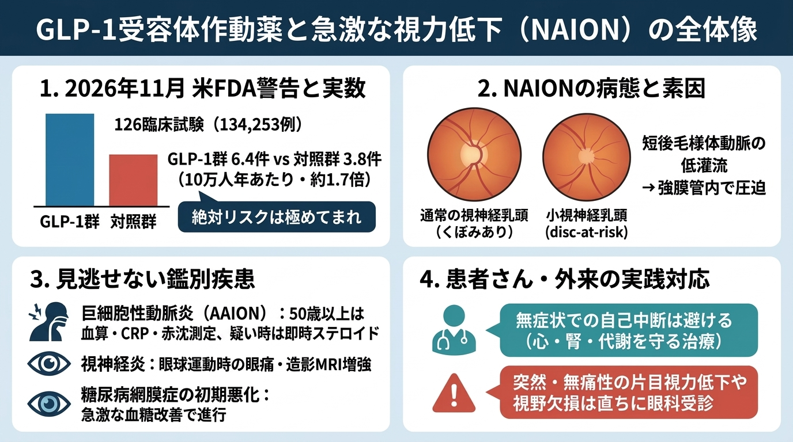

GLP-1受容体作動薬と急激な視力低下（NAION）｜インフォグラフィック（原寸拡大）
画像をタップ／クリックすると原寸のPNG画像（1376×768 px）が開きます。目の症状がない方が自己判断で急に投与を中断することは避け、痛みがなくても片目が急に見えにくくなった場合は速やかに眼科を受診してください。
全体要約：米FDA警告・絶対リスク・鑑別と実臨床対応

画像をタップ／クリックすると原寸のPNG画像（1376×768 px）が開きます。目の症状がない方が自己判断で急に投与を中断することは避け、痛みがなくても片目が急に見えにくくなった場合は速やかに眼科を受診してください。
